164
Page 68
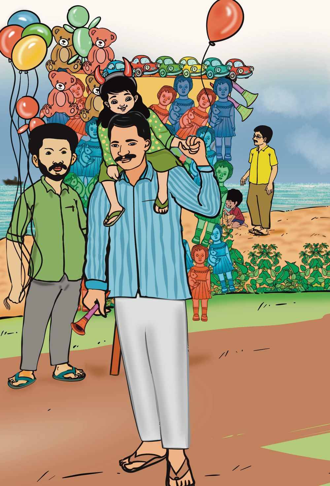

Page 69
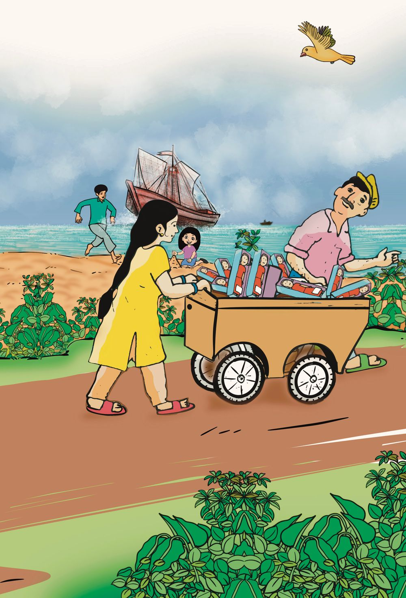

10 Dolls!...Dolls! Sebi and Joji are returning home, after selling dolls. Yes. Half the dolls sold and 10 dolls left.
Today’s sale is not bad.
How many dolls did they bring for sale?
How did you calculate?
165
Page 70
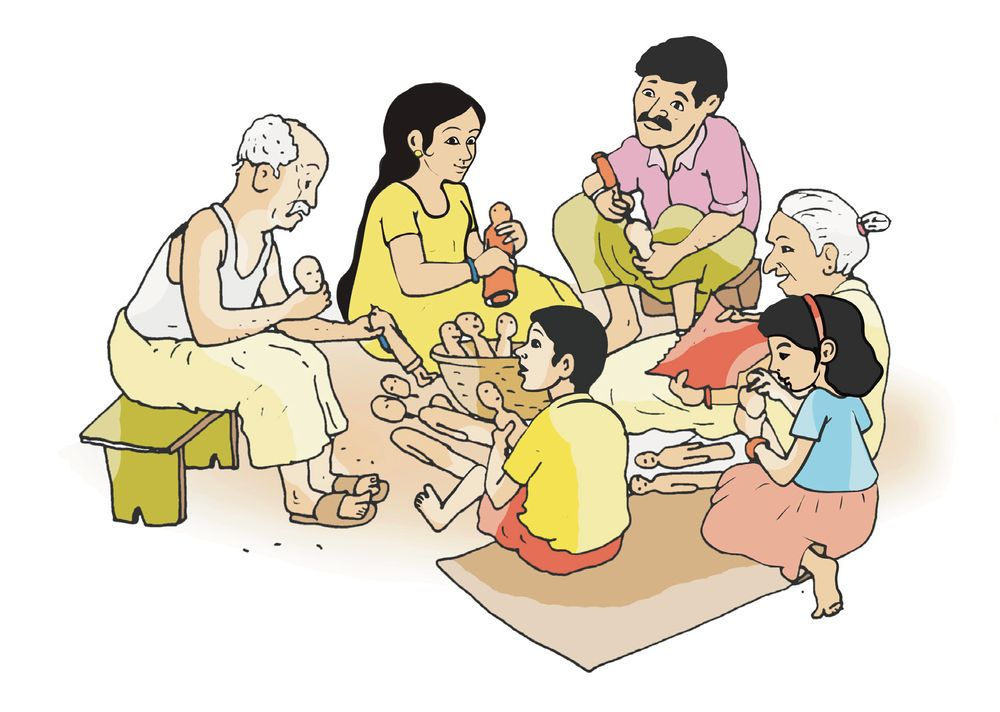

We must make many dolls
Just two days for pooram
Can we do it?
We will also help See the number of dolls they made in 2 days. First day Sebi 12, Joji 6 How many dolls did they make in all?
12 +
6
=
10 +
+
6
=
10 +
8
= 18
2
Second day Sebi made 7 and Joji 11. How many dolls in all?
7
166
+ 11
=
7
+ 10 +
1
=
10 +
8
= 18
Page 71
I did like this 7+11 = 7+10+1 =17 + 1 = 18
How many dolls did Sebi make in 2 days? 12 + 7
= ................. + ................... + ................... = ................. + ................... = .................
How many dolls did Joji make in 2 days? 6 + 11 = ................. + ................... + ...................
= ................. + ................... = ................. 167
Page 72

The remaining. 6 of the dolls Sebi made were sold. Athira bought 2 and Thomas bought 4. How many left? Sebi made 12 dolls Sold
6
Dolls left 12 - 6 First subtract the dolls Athira bought 12 - 2 = 10 Then subtract the dolls Thomas bought 10 - 4 = 6 Now we have subtracted 6 from 12. How I calculated, 6 added to 6 gives 12 12 - 6 = 6 7 dolls of the 11 dolls Joji made were sold. How many dolls are left? Joji made
11 dolls
Dolls left
11 - 7
One was sold first
11 - 1 = 10
Then 6 more sold
10 - 6 = 4
How I calculated, 4 added to 7 gives 11 11 - 7 = 4
168
Page 73
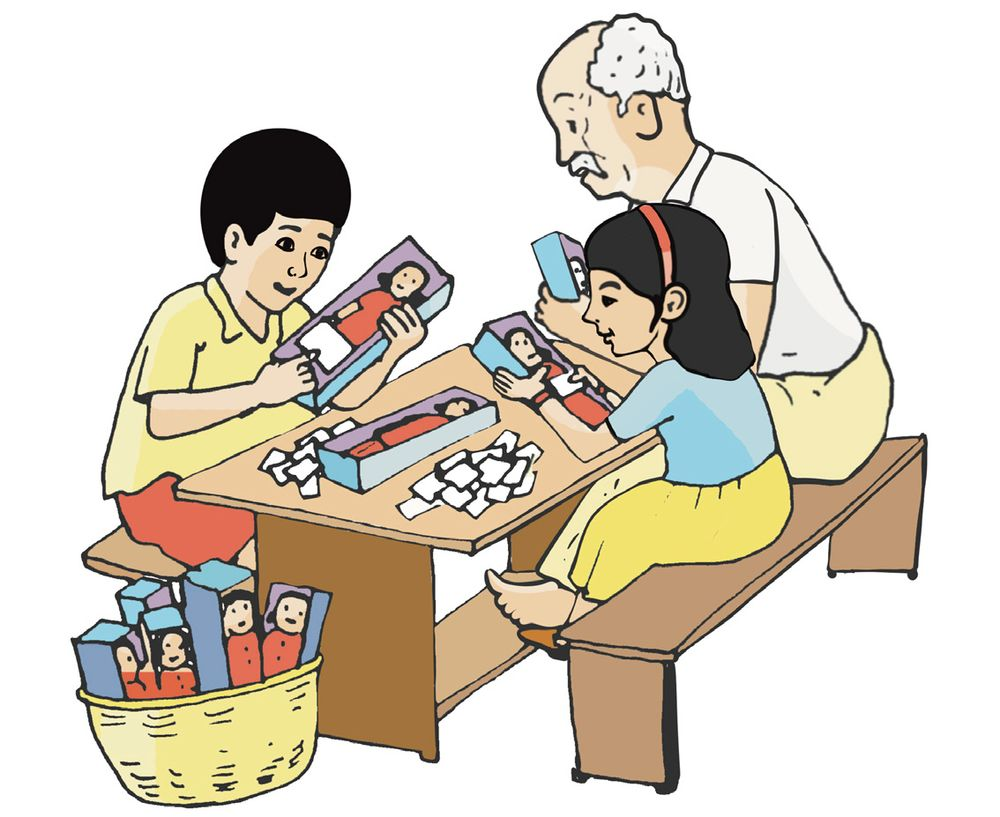

After the sale. 14 dolls of the 19 Sebi made were sold and 15 dolls of the 17 Joji made were also sold. How many dolls are left with each?
Dolls Sebi made Sold Dolls left
-
=
-
=
Dolls Joji made Sold Dolls left How many dolls are left with both of them together?
169
Page 74

Number of dolls Have you seen the number of dolls Sebi and Joji made? Sebi
Joji
First Day - 12
First Day - 6
Second Day - 7
Second Day - 11
Mark the correct ones with a the wrong ones with a Joji made 6 more dolls than Sebi the first day. Number of dolls Joji made in two days is three less than twenty. Joji made more dolls in two days. Number of dolls Sebi made the first day is less than the number of dolls she made the second day. Sebi and Joji made the same number of dolls in two days
170
Page 75
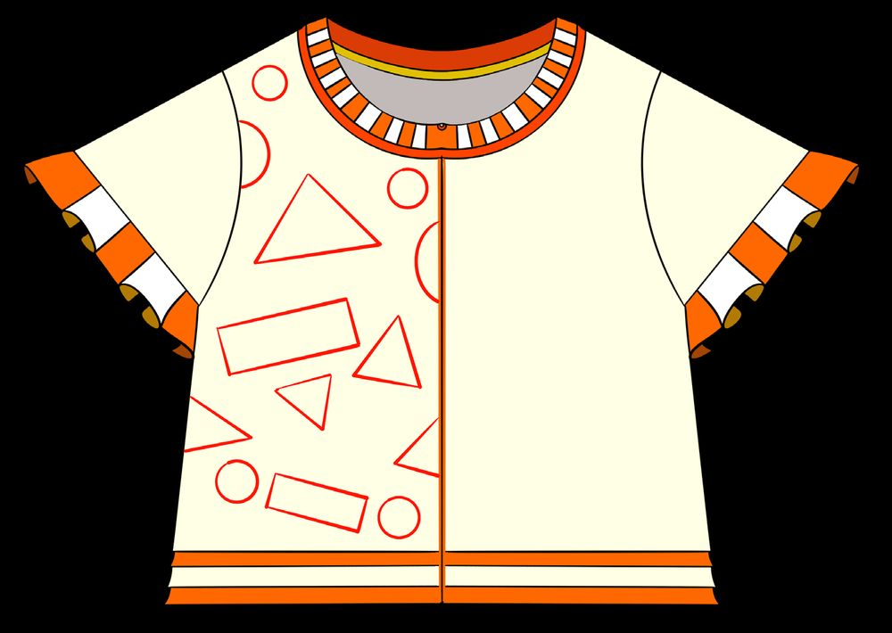

Let us make a shirt See the shirt Sebi and Joji made. Draw the same pattern on the right and make it prettier. And colour them too.
Make a shirt using coloured paper and paste it here.
171
Page 76
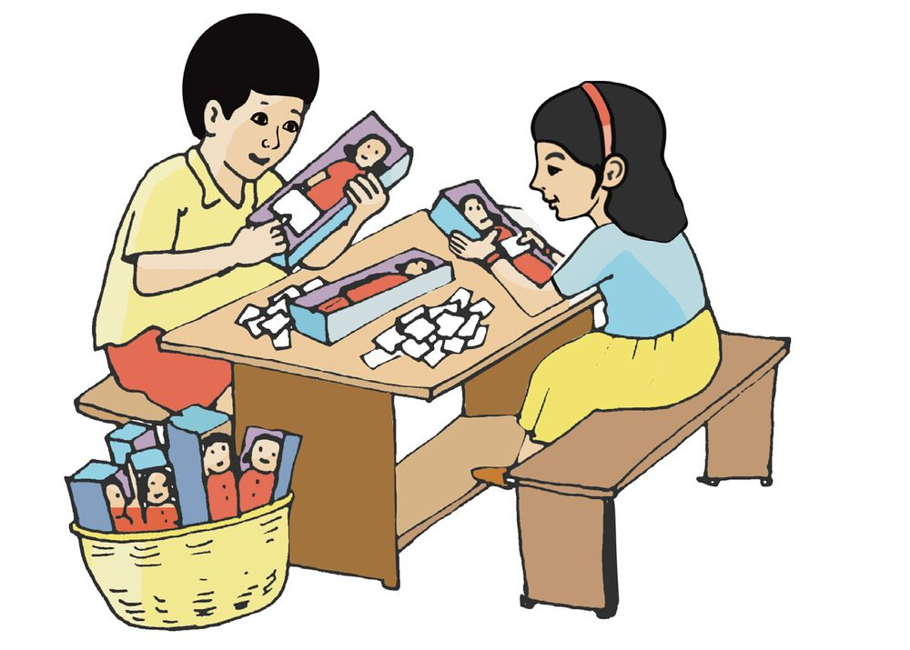

Let us write the prices. We will paste the price stickers.
What is the highest price? Arrange these prices from the lowest to the highest in order.
Sonu has a 50-rupee note and a 10-rupee note. Dolls of what all prices can he buy?
How did you calculate? Can Sonu buy 2 dolls?
172
Page 77
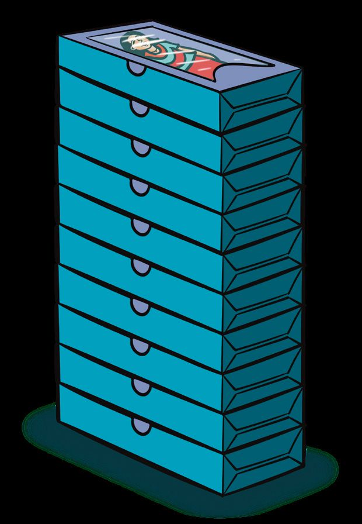
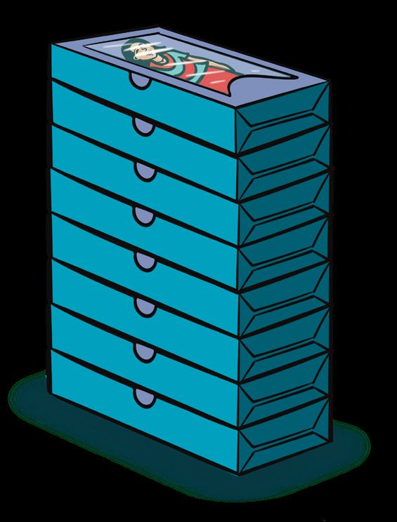
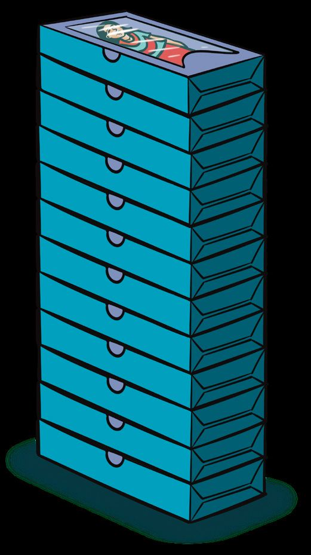
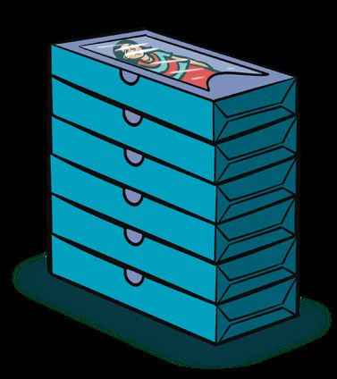

Let us stack the boxes. Look at the boxes of dolls stacked in two piles.
Total number of boxes
+
=
See the boxes stacked another way. In what other ways the boxes can be stacked?
10 + 8
18 12 + 6 173
Page 78
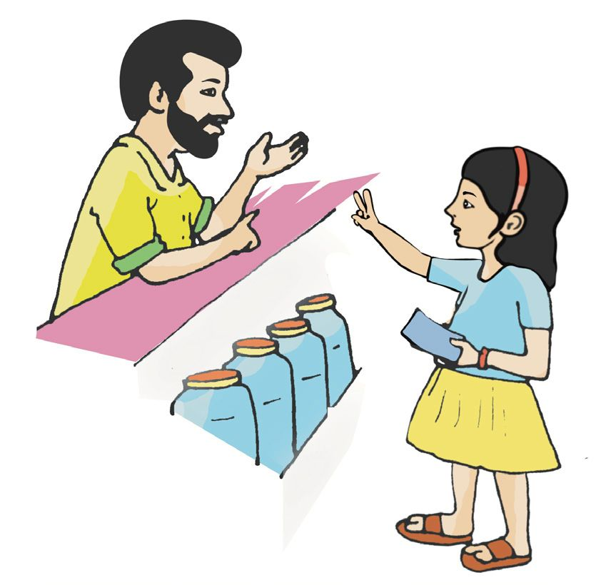
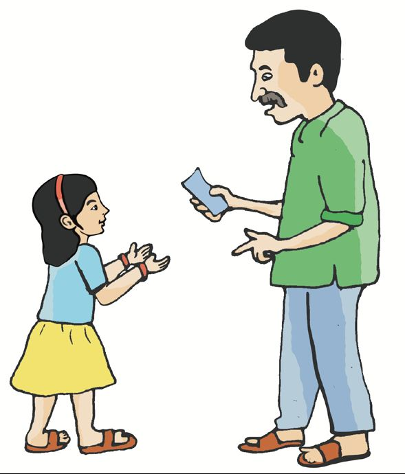

Dear, buy two rolls of thread and a needle. 1 roll of thread is 10 rupees and a needle is 5 rupees. I want 1 roll of thread and 2 needles. Oh! Made a mistake. Will I get two needles for the price of 1 roll of thread?
Which costs more, 2 needles and 1 roll of thread or 1 needle and 2 rolls of thread?
174
Page 79

Write the prices in order.
₹ 25
₹ 70
₹ 38
₹ 53
₹ 92
₹ 85
What is the highest price? And the lowest? Write the prices from the highest to the lowest in order.
Clock math. Write numbers in blank boxes. 60 5 11
50
12
1
10
10 2
9
3
8
15
4 7
6
5
30
175
Page 80
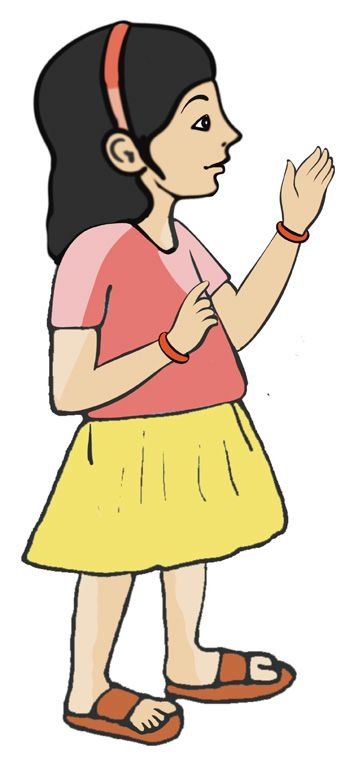

How many dolls? On Sunday Grandma, Grandpa and Mom made some dolls. See the number of dolls they made. Grandpa 4 Grandma 8 and Mom 6 How many dolls did they make altogether?
4+8+6 4 +8 = 4 + 6 +2 = 10 + 2 = 12 dolls 12 + 6 = 10 + 2 + 6 = 10 + 8 = 18 dolls
I also got it! 4 and 6 make 10 10 and 8 make 18
3 of the dolls they made, were sold on Monday and 4 were sold on Tuesday. How many dolls left? They made 18 dolls. 3 dolls were sold on Monday. Dolls left 18 - 3 = 10 + 8 - 3 = 10 + 5 = 15 dolls How I did it 18 - 3 - 4 = 18 - 7 =11
176
Tuesday they sold 4 dolls. Dolls left 15 - 4 = 10 + 5 - 4 = 10 + 1 = 11 dolls
Page 81


Who wins the prize?
Do you want the prize in the box? Read the following and find the number. The number is between 6 and 19. What all numbers can it be? It is a two digit number. Strike out numbers to be removed. It is between 15 and 19 (remove others) So, What all can be the numbers? If we remove the largest number left, what are the other numbers? It is not the smallest number either. The number left is the number which wins the prize. What is the number?
177
Page 82


Card game Choose 2, 3 or 4 cards. Total should be 20. The winner will get the toy as a prize.
12
5
1
16 13 18
4
6
14 18
7
8
1
2
4
6
7
16
5
13
6
3
14
1
3
18
2
1
16 13
8
5
14
The cards I took
178
+
= 20
+
+
+
+
+
= 20
= 20
Page 83

Aravind got 20 from 3 cards. The cards he took are
Laila got 12 from 4 cards. The cards she took
Sonu took 2 cards and he got 17. What are the cards?
+
=
To get 15 from 3 cards, what cards should we choose?
+
+
=
Vinitha took 3 cards. For the prize, what other card should she take? 13
+
4
+
1
+
= 20 179
Page 84

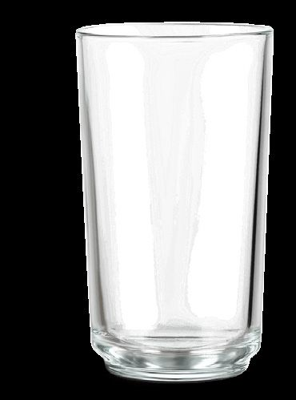

Lime Juice
Lime Juice Big Glass
10 rupees
Small Glass
5 rupees
Two children drank two small glasses of lime juice and the elder sister drank one big glass. How much should they pay in all? Price of one big glass of lime juice. Price of 2 small glasses of lime juice. Total price of lime juice? What I found out.
One gets a big glass of lime juice for the price of two small glasses of lime juice.
180
Page 85


Price of orange The price of one orange is 9 rupees. If we buy 2 oranges, how much should we pay? If two ten rupee coins are given, how much will we get back?
Anz - The talking doll.
Anz Talk Ask me I will answer
What did the doll say? Write the answer. 2, 4, 6, 8, 10, 12, ....... What is the next number? What is the largest 1 digit number? What is the number between 15 and 17?
181
Page 86


What number is 2 more than 18? What do we get if we add 7 and 6? What number is 1 more than 89? What number is 15 less than 45? What number is 19 more than the sum of 50 and 30? What number is 10 less than 59? Now my questions to the doll:
Let us join together...and sing. Please sing a song... Ten little kittens Playing with a ball Two of them left And then four more How many are now Playing with the ball? Now, my questions.
182
Page 87

Number Magic 17 flowers in one basket. Janvi took 3. Now, how many are left in the basket? Lissy put 4 new flowers in the basket. Now, how many flowers in the basket? Raj took one flower from the basket. Now, how many are left in the basket?
Do you know how I find it? Took 3 and put in 4; that makes 1 more, right? Then took 1.
183
Page 88

Mango maths. 15 mangoes in a bag. Suhra took 3. Lissy took 2. How many are left in the bag? How do we find out? How I calculated?
How my friend calculated?
184